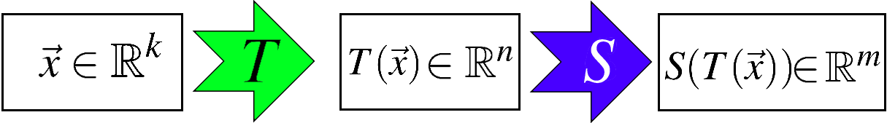

5.3. Properties of Linear Transformations
Theorem: Properties of Linear Transformations
Let \(T:~\mathbb{R}^n \to \mathbb{R}^m\) be a linear transformation and let \(\vec{x}\in \mathbb{R}^n\).
\textbf{\(T\) preserves the zero vector:}
\[\begin{align*}
T(0\vec{x}) = 0T(\vec{x}).\quad \Rightarrow \quad T( \vec{0}) = \vec{0}.
\end{align*}\]
\textbf{\(T\) preserves the negative of a vector:}
\[\begin{align*}
T((-1)\vec{x}) = (-1)T(\vec{x}).\quad \Rightarrow \quad T(-\vec{x}) = -T(\vec{x}).
\end{align*}\]
\textbf{\(T\) preserves linear combinations:}\
Let \(\vec{x}_1 ,\ldots ,\vec{x}_k\) in \(\mathbb{R}^n\) and \(a_1 ,\ldots ,a_k\) in \(\mathbb{R}^n\). Then if \(\vec{y} = a_1 \vec{x}_1 +a_2 \vec{x}_2 +\ldots+a_k\vec{x}_k\), it follows that
\[\begin{align*}
T(\vec{y}) = T(a_1 \vec{x}_1 +a_2 \vec{x}_2 +\ldots+a_k\vec{x}_k) =
a_1 T(\vec{x}_1 )+a_2 T(\vec{x}_2)+\ldots+a_k T(\vec{x}_1).
\end{align*}\]
Example:
Let \(T\) be a transformation defined by \(T:~\mathbb{R}^2 \to \mathbb{R}^2\) is defined by
\[\begin{equation*}
T\begin{bmatrix}x \\ y\end{bmatrix}=\begin{bmatrix}x+y+1\\ x\end{bmatrix}.
\end{equation*}\]
Is \(T\) is a linear transformation?
Solution:
We can use the definition to show \(T\) is not a linear transformation.
However, it is more convenient to use above Theorem to show
that \(T\) is not a linear transformation. We have
\[\begin{align*}
T\begin{bmatrix}0 \\ 0\end{bmatrix}=\begin{bmatrix}0+0+1\\ 0\end{bmatrix}=\begin{bmatrix}1\\ 0\end{bmatrix}.
\end{align*}\]
Therefore, \(T\) is not a linear transformation.
Remark
Observe that if \(T\) is not a linear transformation if it cannot preserve at least one of the three conditions from the above theorem.
Example:
Suppose \(T:~\mathbb{R}^2 \to \mathbb{R}^2\) is a linear transformation such that
\[\begin{align*}
T\begin{bmatrix}1\\1\end{bmatrix}=\begin{bmatrix}1\\2\end{bmatrix}
\text{ and }
T\begin{bmatrix}0\\-1\end{bmatrix}=\begin{bmatrix}3\\2\end{bmatrix}
\end{align*}\]
Find \(T\begin{bmatrix}3\\2\end{bmatrix}\).
Solution:
First, we can write down \(\begin{bmatrix}3 & 2\end{bmatrix}^{T}\) as a linear combinations of \(\begin{bmatrix}1 & 1\end{bmatrix}^{T}\) and \(\begin{bmatrix}0 & -1\end{bmatrix}^{T}\). To do so, we can find \(a\) and \(b\) from the following equation.
\[\begin{align*}
\begin{bmatrix}3\\2\end{bmatrix}&=a\,\begin{bmatrix}1\\1\end{bmatrix}+b\,\begin{bmatrix}0\\-1\end{bmatrix}
\quad \Rightarrow \quad
\begin{bmatrix}3\\2\end{bmatrix}=\begin{bmatrix}1 & 0\\1 & -1\end{bmatrix}\begin{bmatrix}a\\b\end{bmatrix}.
\end{align*}\]
Solving this linear system: \(a=3\) and \(b=1\). Hence,
\[\begin{align*}
\begin{bmatrix}3\\2\end{bmatrix}&=3\,\begin{bmatrix}1\\1\end{bmatrix}+\begin{bmatrix}0\\-1\end{bmatrix}.
\end{align*}\]
Since \(T\) is linear,
\[\begin{align*}
T\begin{bmatrix}3\\2\end{bmatrix}&=3\,T\begin{bmatrix}1\\1\end{bmatrix}+
T\begin{bmatrix}0\\-1\end{bmatrix}
=3\,\begin{bmatrix}1\\2\end{bmatrix}+\begin{bmatrix}3\\2\end{bmatrix}=\begin{bmatrix}6\\8\end{bmatrix}.
\end{align*}\]
Example:
Suppose \(T:~\mathbb{R}^2 \to \mathbb{R}^2\) is a linear transformation such that
\[\begin{align*}
T\begin{bmatrix}1\\1\end{bmatrix}=\begin{bmatrix}1\\3\end{bmatrix} \text{ and } T\begin{bmatrix}1\\2\end{bmatrix}=\begin{bmatrix}1\\4\end{bmatrix}.
\end{align*}\]
Find the matrix \(A\) of \(T\) such that \(T (\vec{x}) = A\vec{x}\) for all \(\vec{x}\).
Solution:
First, we need to express \(\vec{e}_1\) and \(\vec{e}_2\) as linear combinations of \(\begin{bmatrix}1\\1\end{bmatrix}\) and \(\begin{bmatrix}1\\2\end{bmatrix}\). Doing so, we need to find \(a,~b,~c\) and \(d\) such that,
\[\begin{align*}
\begin{cases}
\begin{bmatrix}1\\0\end{bmatrix}=a\begin{bmatrix}1\\1\end{bmatrix}+b\begin{bmatrix}1\\2\end{bmatrix},\\
~\\
\begin{bmatrix}0\\1\end{bmatrix}=c\begin{bmatrix}1\\1\end{bmatrix}+d\begin{bmatrix}1\\2\end{bmatrix}.
\end{cases}
\end{align*}\]
These can be represented as following linear systems,
\[\begin{align*}
\begin{cases}
\begin{bmatrix}1\\0\end{bmatrix}=\begin{bmatrix}1 & 1\\1 & 2\end{bmatrix}\begin{bmatrix}a\\b\end{bmatrix},\\
~\\
\begin{bmatrix}0\\1\end{bmatrix}=\begin{bmatrix}1 & 1\\1 & 2\end{bmatrix}\begin{bmatrix}c\\d\end{bmatrix}.
\end{cases}
\end{align*}\]
Solving these linear systems leads to \(\begin{cases}a=2,\\b=-1.\end{cases}\) and \(\begin{cases}c=-1,\\d=1.\end{cases}\).
On the other hand, since \(T\) is linear,
\[\begin{align*}
\begin{cases}
T\begin{bmatrix}1\\0\end{bmatrix}=aT\begin{bmatrix}1\\1\end{bmatrix}+bT\begin{bmatrix}1\\2\end{bmatrix},\\
~\\
T\begin{bmatrix}0\\1\end{bmatrix}=cT\begin{bmatrix}1\\1\end{bmatrix}+dT\begin{bmatrix}1\\2\end{bmatrix}.
\end{cases}
\end{align*}\]
However, we know that
\(T\begin{bmatrix}1\\1\end{bmatrix}=\begin{bmatrix}1\\3\end{bmatrix}\) and \(T\begin{bmatrix}1\\2\end{bmatrix}=\begin{bmatrix}1\\4\end{bmatrix}.\)
Therefore,
\[\begin{align*}
\begin{cases}a=2,\\b=-1.\end{cases},~\begin{cases}c=-1,\\d=1.\end{cases}
\quad \Rightarrow \quad
\begin{cases}
T\begin{bmatrix}1\\0\end{bmatrix}=2\begin{bmatrix}1\\3\end{bmatrix}-\begin{bmatrix}1\\4\end{bmatrix}=\begin{bmatrix}1\\2\end{bmatrix},\\
~\\
T\begin{bmatrix}0\\1\end{bmatrix}=-\begin{bmatrix}1\\3\end{bmatrix}+\begin{bmatrix}1\\4\end{bmatrix}=\begin{bmatrix}0\\1\end{bmatrix}.
\end{cases}
\end{align*}\]
Thus,
\[\begin{align*}
T\left(\vec{x}\right)&=T\left(x_1 \vec{e}_1+x_2 \vec{e}_2\right)=x_1 T\left(\vec{e}_1\right)+x_2 T\left(\vec{e}_2\right)
\\ &
=\begin{bmatrix}| & |\\T\left(\vec{e}_1\right) & T\left(\vec{e}_2\right)\\| & |\end{bmatrix}\begin{bmatrix}x_1\\x_2\end{bmatrix}
=\begin{bmatrix}1 & 0\\ 2 & 1\end{bmatrix}\,\begin{bmatrix}x_1\\x_2\end{bmatrix}=\begin{bmatrix}1 & 0\\ 2 & 1\end{bmatrix}\,\vec{x},\qquad \vec{x}\in \mathbb{R}^2
\end{align*}\]
Procedure: Finding the corresponding matrix for a linear transformation
Assume that \(T:~\mathbb{R}^n \to \mathbb{R}^m\) is a linear transformation, and there exist vectors \(\{\vec{x}_1 ,\ldots ,\vec{x}_n \}\) in \(\mathbb{R}^n\) such that the inverse of
\(X=\begin{bmatrix}| & | & \dots & |\\
\vec{x}_1 & \vec{x}_2 & \dots & \vec{x}_n\\
| & | & \dots & | \end{bmatrix}\)
exists, and \(\{T (\vec{x}_1) ,\ldots ,T (\vec{x}_n) \}\) in \(\mathbb{R}^m\). Now, we want to identify the corresponding matrix for this linear transformation, matrix \(A\),
Set \(Y=\begin{bmatrix}| & | & \dots & |\\
T (\vec{x}_1) & T (\vec{x}_2) & \dots & T (\vec{x}_n)\\
| & | & \dots & | \end{bmatrix}\).
Then, the matrix of \(A\) is of the form
\[\begin{align*}
A=Y\,X^{-1}=
\begin{bmatrix}| & | & \dots & |\\
T (\vec{x}_1) & T (\vec{x}_2) & \dots & T (\vec{x}_n)\\
| & | & \dots & | \end{bmatrix}
\begin{bmatrix}| & | & \dots & |\\
\vec{x}_1 & \vec{x}_2 & \dots & \vec{x}_n\\
| & | & \dots & | \end{bmatrix}^{-1}.
\end{align*}\]
Example:
Suppose \(T:~\mathbb{R}^3 \to \mathbb{R}^4\) is a linear transformation such that
\[\begin{align*}
T\begin{bmatrix}1\\ 1\\ 1\end{bmatrix}=\begin{bmatrix}1\\ 2\\ 2\\ 1\end{bmatrix},~
T\begin{bmatrix}1\\ 1\\ 0\end{bmatrix}=\begin{bmatrix}1\\ 2\\ 1\\ 0\end{bmatrix}
\text{ and }
T\begin{bmatrix}1\\ 0\\ 1\end{bmatrix}=\begin{bmatrix}1\\ 1\\ 1\\ 1\end{bmatrix}.
\end{align*}\]
Find the matrix of this linear transformation.
Solution:
Set
\[\begin{align*}
X=\begin{bmatrix}| & | & | \\\vec{x}_1 & \vec{x}_2 & \vec{x}_3\\| & | & | \end{bmatrix}=
\begin{bmatrix}1 & 1 & 1\\ 1 & 1 & 0\\ 1 & 0 & 1\end{bmatrix}
\text{ and }
Y=\begin{bmatrix}| & | & | \\T (\vec{x}_1) & T (\vec{x}_2) & T (\vec{x}_3)\\| & | & | \end{bmatrix}=
\begin{bmatrix}1 & 1 & 1\\ 2 & 2 & 1\\ 2 & 1 & 1\\ 1 & 0 & 1\end{bmatrix}.
\end{align*}\]
It can be seen that \(X^{-1}=\begin{bmatrix}-1 & 1 & 1\\ 1 & 0 & -1\\ 1 & -1 & 0\end{bmatrix}.\)
Therefore, the matrix of this linear transformation is of the form
\[\begin{align*}
A=Y\,X^{-1}=
\begin{bmatrix}1 & 1 & 1\\ 2 & 2 & 1\\ 2 & 1 & 1\\ 1 & 0 & 1\end{bmatrix}
\begin{bmatrix}-1 & 1 & 1\\ 1 & 0 & -1\\ 1 & -1 & 0\end{bmatrix}=
\begin{bmatrix}1 & 0 & 0\\ 1 & 1 & 0\\ 0 & 1 & 1\\ 0 & 0 & 1\end{bmatrix}
\end{align*}\]
Example:
Let \(\vec{d} =\begin{bmatrix}1\\ 2\\ 2\end{bmatrix}\) and let \(T\) be the projection map \(T:~\mathbb{R}^3 \to \mathbb{R}^3\) defined by
\(T(\vec{u}) = proj_{\vec{d}}{\vec{u}}\)
for any \(\vec{u}\in \mathbb{R}^3\). Find the matrix of this linear transformation.
Solution:
We know that,
\[\begin{align*}
T\left(\vec{x}\right)&=T\left(x_1 \vec{e}_1+x_2 \vec{e}_2+x_3 \vec{e}_3\right)=
x_1 T\left(\vec{e}_1\right)+x_2 T\left(\vec{e}_2\right)+x_3 T\left(\vec{e}_3\right)
\\ &
=\begin{bmatrix}| & | & | \\ T\left(\vec{e}_1\right) & T\left(\vec{e}_2\right) & T\left(\vec{e}_3\right)\\
| & | & | \end{bmatrix} \begin{bmatrix}x_1\\x_2\\x_3\end{bmatrix}
=A\,\begin{bmatrix}x_1\\x_2\\x_3\end{bmatrix}=A\,\vec{x}.
\end{align*}\]
Furthermore, it can be seen that \(\vec{d} \bullet \vec{d}=9\), and
\[\begin{align*}
T\left(\vec{e}_1\right) &= proj_{\vec{d}}{\vec{e}_1}=\frac{ \vec{d} \bullet \vec{e}_1 }{\vec{d} \bullet \vec{d}}\vec{d}=
\frac{1}{9}\begin{bmatrix}1\\ 2\\ 2\end{bmatrix}=
\begin{bmatrix}\frac{1}{9}\\ \frac{2}{9}\\ \frac{2}{9}\end{bmatrix},
\\
T\left(\vec{e}_2\right) &= proj_{\vec{d}}{\vec{e}_2}=\frac{ \vec{d} \bullet \vec{e}_2 }{\vec{d} \bullet \vec{d}}\vec{d}=
\frac{2}{9}\begin{bmatrix}1\\ 2\\ 2\end{bmatrix}=
\begin{bmatrix} \frac{2}{9}\\ \frac{4}{9}\\ \frac{4}{9} \end{bmatrix},
\\
T\left(\vec{e}_3\right) &= proj_{\vec{d}}{\vec{e}_3}=\frac{ \vec{d} \bullet \vec{e}_3 }{\vec{d} \bullet \vec{d}}\vec{d}=
\frac{2}{9}\begin{bmatrix}1\\ 2\\ 2\end{bmatrix}=
\begin{bmatrix} \frac{2}{9}\\ \frac{4}{9}\\ \frac{4}{9} \end{bmatrix}.
\end{align*}\]
Therefore,
\[\begin{align*}
A=\begin{bmatrix}| & | & |\\ T\left(\vec{e}_1\right) & T\left(\vec{e}_2\right) & T\left(\vec{e}_3\right)\\
| & | & |\end{bmatrix}=
\begin{bmatrix}\frac{1}{9} & \frac{2}{9} & \frac{2}{9}\\ \frac{2}{9} & \frac{4}{9} & \frac{4}{9}\\ \frac{2}{9} & \frac{4}{9} & \frac{4}{9}\end{bmatrix}=
\frac{1}{9}\begin{bmatrix}1 & 2 & 2\\ 2 & 4 & 4\\ 2 & 4 & 4 \end{bmatrix}.
\end{align*}\]
The linear transformation is given by \(T (\vec{x}) = A\vec{x}\) for all \(\vec{x}\in \mathbb{R}^3\).
Equal Transformations
Two liner transformations \(S\) and \(T\) from \(\mathbb{R}^n\) to \(\mathbb{R}^m\) are equal, \(S = T\), if and only if
\[\begin{align*}S(\vec{x}) = T (\vec{x}),\end{align*}\]
for every \(\vec{x}\in \mathbb{R}^n\).
Composition of Linear Transformations
The composition of \(S:\mathbb{R}^n\rightarrow \mathbb{R}^m\) and \(T:\mathbb{R}^k\rightarrow \mathbb{R}^n\) is \(S\circ T: \mathbb{R}^k\rightarrow \mathbb{R}^m,\)
is defined by
\[\begin{align*}
(S\circ T)(\vec{x}) = S(T(\vec{x}))\quad \text{ for all } \vec{x} \in \mathbb{R}^n
\end{align*}\]

Theorem: Composition of Transformations
The linear transformation \(S\circ T\) is induced by the matrix \(BA\) where
\(T:~\mathbb{R}^k \to \mathbb{R}^n\) and \(S:~\mathbb{R}^n \to \mathbb{R}^m\) are linear transformations induced by matrices \(A\) and \(B\), respectively.
Example:
Let \(T\) be a linear transformation induced by the matrix
\(A =\begin{bmatrix}1 & 1\\ 2 & 0\end{bmatrix}\) and \(S\) a linear transformation induced by the matrix \(B =\begin{bmatrix}1 & 0\\ 2 & 1\end{bmatrix}\).
Find the matrix of the composite transformation \(S\circ T\) and \(T\circ S\).
Solution:
The matrix of \(S\circ T\) and \(T\circ S\) are respectively given by \(BA\) and \(AB\):
\[\begin{align*}
BA=\begin{bmatrix}1 & 0\\ 2 & 1\end{bmatrix}\begin{bmatrix}1 & 1\\ 2 & 0\end{bmatrix}=\begin{bmatrix}1 & 1\\ 4 & 2\end{bmatrix},\quad
AB=\begin{bmatrix}1 & 1\\ 2 & 0\end{bmatrix}\begin{bmatrix}1 & 0\\ 2 & 1\end{bmatrix}=\begin{bmatrix}3 & 1\\ 2 & 0\end{bmatrix}.
\end{align*}\]
Inverse of a Transformation
Assume that \(T:~\mathbb{R}^n \to \mathbb{R}^n\) and \(S:~\mathbb{R}^n \to \mathbb{R}^n\) are linear transformations. Then, if for each \(\vec{x}\in \mathbb{R}^n\),
\[\begin{align*}
(S\circ T)(\vec{x}) =\vec{x} \quad \text{and} \quad (T\circ S)(\vec{x}) =\vec{x}.
\end{align*}\]
\(S\) is called an inverse of \(T\), and \(T\) is called an inverse of \(S\).

Theorem: Inverse of a Transformation
Assume that \(T:~\mathbb{R}^n \to \mathbb{R}^n\) is a linear transformation induced by the matrix \(A\). Then, this linear transformation is invertible (has an inverse transformation), \(T\), if only if \(A\) is invertible. The inverse transformation is unique and denoted by \(T^{-1}:~\mathbb{R}^n \to \mathbb{R}^n\).
Remark:
If transformation by \(T\) is induced by matrix \(A\), then \(T^{-1}\) is induced by the matrix \(A^{-1}\).
Example:
Let \(T:~\mathbb{R}^3 \to \mathbb{R}^3\) be a linear transformation induced by the matrix \(A =\begin{bmatrix}1 & 1 & 0\\ 0 & 1 & 0 \\ 0 & 1 & 1\end{bmatrix}\),
Find \(T^{-1}\) if it exists.
Solution:
It is easy to see that \(\det(A)=1\) and \(A^{-1}=\begin{bmatrix}1 & -1 & 0\\ 0 & 1 & 0\\ 0 & -1 & 1\end{bmatrix}\). Therefore,
the inverse of linear transformation \(T\) is given by \(T^{-1}(\vec{x}) = B\vec{x}\) for all \(\vec{x}\in \mathbb{R}^3\)
where \(B=A^{-1}=\begin{bmatrix}1 & -1 & 0\\ 0 & 1 & 0\\ 0 & -1 & 1\end{bmatrix}\).
Example:
Let \(A=\left[\begin{array}{ccc} 1 & 1 & 3\\ 1 & 3 & 5\\ 3 & 0 & 7 \end{array}\right]\) be the matrix and define a transformation \(T:\mathbb{R}^3\to \mathbb{R}^3\) by \(T(\vec{x}) = A\vec{x}\). Find a vector \(\vec{x}\) such that \(T\) maps \(\vec{x}\) to \(\left[\begin{array}{ccc} 0 & -6 & 10 \end{array}\right]^T\), if possible. Otherwise state that there is no such \(\vec{x}\).
\[\begin{align*}
.
\end{align*}\]
Solution:
Let \(\vec{x}=\left[\begin{array}{ccc} x_1 & x_2 & x_3 \end{array}\right]^T\). We have
\[\begin{align*}
A=\left[\begin{array}{ccc} 1 & 1 & 3\\ 1 & 3 & 5\\ 3 & 0 & 7 \end{array}\right]
\left[\begin{array}{c} x_1 \\ x_2 \\ x_3 \end{array}\right]
=\left[\begin{array}{c} 0\\ -6\\ 10 \end{array}\right].
\end{align*}\]
Finding \(\vec{x}\) is equivalent to solving the above linear system. Hence, the corresponding augmented matrix:
\[\begin{align*}
\left[\begin{array}{ccc|c} 1 & 1 & 3 & 0\\ 1 & 3 & 5 & -6\\ 3 & 0 & 7 & 10 \end{array}\right]
\end{align*}\]
in RREF:
\[\begin{align*}
\left[\begin{array}{ccc|c} 1 & 0 & 0 & 1\\ 0 & 1 & 0 & -4\\ 0 & 0 & 1 & 1 \end{array}\right]
\end{align*}\]
This means
\[\begin{align*}
\vec{x}=\left[\begin{array}{c} 1\\ -4\\ 1 \end{array}\right].
\end{align*}\]
Example:
A linear transformation \(T:{\mathbb R}^3\to{\mathbb R}^3\) such that
\[\begin{align*}
T\begin{bmatrix}1\\ 1\\ 0\end{bmatrix}=\begin{bmatrix}a\\ b\\ c\end{bmatrix},\quad
T\begin{bmatrix}0\\ 1\\ 0\end{bmatrix}=\begin{bmatrix}0\\ a\\ b\end{bmatrix}\quad\text{and}\quad
T\begin{bmatrix}0\\ 1\\ 1\end{bmatrix}=\begin{bmatrix}c\\ b\\ a\end{bmatrix}.
\end{align*}\]
Find the matrix of \(T\).
Solution:
We know that,
\[\begin{align*}
T\left(\vec{x}\right)&=T\left(x_1 \vec{e}_1+x_2 \vec{e}_2+x_3 \vec{e}_3\right)=
x_1 T\left(\vec{e}_1\right)+x_2 T\left(\vec{e}_2\right)+x_3 T\left(\vec{e}_3\right)
\\ &
=\begin{bmatrix}| & | & | \\ T\left(\vec{e}_1\right) & T\left(\vec{e}_2\right) & T\left(\vec{e}_3\right)\\
| & | & | \end{bmatrix} \begin{bmatrix}x_1\\x_2\\x_3\end{bmatrix}
=A\,\begin{bmatrix}x_1\\x_2\\x_3\end{bmatrix}=A\,\vec{x}.
\end{align*}\]
Therefore, it is enough to find \(T\left(\vec{e}_1\right)\), \(T\left(\vec{e}_2\right)\) and \(T\left(\vec{e}_3\right)\). Note that \(T\left(\vec{e}_2\right)\) is given and
\[\begin{align*}
\vec{e}_1=\begin{bmatrix}1\\ 0\\ 0\end{bmatrix}=\begin{bmatrix}1\\ 1\\ 0\end{bmatrix}-\begin{bmatrix}0\\ 1\\ 0\end{bmatrix}
\quad \text{and}\quad
\vec{e}_3=\begin{bmatrix}0\\ 0\\ 1\end{bmatrix}=\begin{bmatrix}0\\ 1\\ 1\end{bmatrix}-\begin{bmatrix}0\\ 1\\ 0\end{bmatrix}
\end{align*}\]
Moreover, \(T\) is a linear transformation. Hence,
\[\begin{align*}
T\left(\vec{e}_1\right)&=T\begin{bmatrix}1\\ 0\\ 0\end{bmatrix}=T\begin{bmatrix}1\\ 1\\ 0\end{bmatrix}-T\begin{bmatrix}0\\ 1\\ 0\end{bmatrix}
=\begin{bmatrix}a\\ b\\ c\end{bmatrix}-\begin{bmatrix}0\\ a\\ b\end{bmatrix}
=\left[\begin{array}{c} a\\ b-a\\ c-b \end{array}\right],
\\
T\left(\vec{e}_3\right)&=T\begin{bmatrix}0\\ 0\\ 1\end{bmatrix}=T\begin{bmatrix}0\\ 1\\ 1\end{bmatrix}-T\begin{bmatrix}0\\ 1\\ 0\end{bmatrix}
=\begin{bmatrix}c\\ b\\ a\end{bmatrix}-\begin{bmatrix}0\\ a\\ b\end{bmatrix}
=\left[\begin{array}{c} c\\ b-a\\ a-b\end{array}\right].
\end{align*}\]
Thus,
\[\begin{align*}
A=\begin{bmatrix}| & | & | \\ T\left(\vec{e}_1\right) & T\left(\vec{e}_2\right) & T\left(\vec{e}_3\right)\\
| & | & | \end{bmatrix} \begin{bmatrix}x_1\\x_2\\x_3\end{bmatrix}
=\left[\begin{array}{ccc} a & 0 & c\\ b-a & a & b-a\\ c-b & b & a-b \end{array}\right].
\end{align*}\]
Refrences
Kuttler, Kenneth. “A First Course in Linear Algebra (Lyryx).” (2018).
Nicholson, W. Keith. “Linear Algebra with Applications (Lyryx).” (2018).
{kind=link}